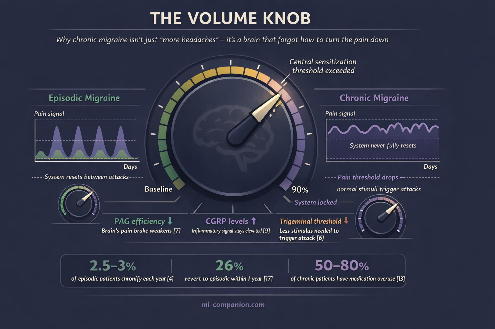
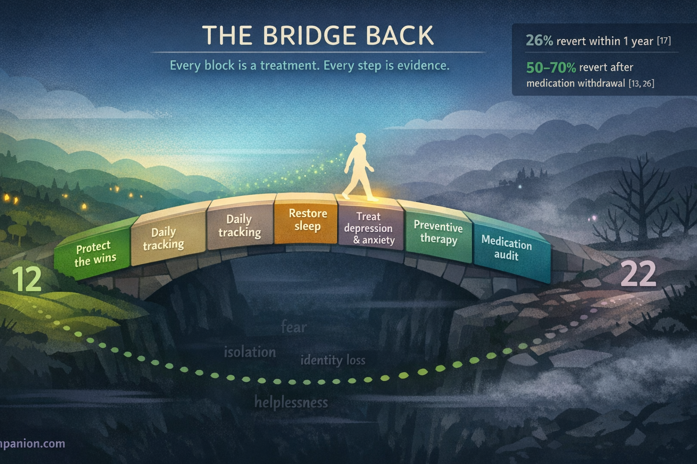

By Rustam Iuldashov
30 years lived experience with chronic migraine | Sources: 28 peer-reviewed references including The Lancet (n=778), New England Journal of Medicine (n=1,130), Neurology (n=16,789) | Last updated: March 10, 2026
Medical Review: This content is based on peer-reviewed research from Cephalalgia, Headache, The Lancet, The Lancet Neurology, New England Journal of Medicine, Neurology, Journal of Neuroscience, Journal of Neurology, Archives of Internal Medicine, and Current Pain and Headache Reports.
Important Notice: This article is for informational purposes only and does not replace professional medical advice. The author is not a licensed physician or healthcare professional. Always consult your doctor before making changes to your treatment plan.
Key Takeaways
- Chronic migraine is defined as 15+ headache days per month for at least 3 months, with migraine features on at least 8 of those days[1]
- The transition involves central sensitization — measurable biological changes in how the brain processes and fails to suppress pain[5, 7]
- Medication overuse (acute meds on 10+ days/month) is the most dangerous modifiable risk factor, creating a paradoxical worsening cycle[12, 13]
- Chronic migraine is dynamic, not permanent — roughly 26% of people revert to episodic within a year with appropriate treatment[17]
- Crossing the 15-day line unlocks specific therapies — Botox, CGRP antibodies, gepants — not available for episodic migraine[20, 22, 25]
- Recovery is medical, behavioral, and psychological — treating the triad of depression, anxiety, and sleep is essential, not optional[15]
- Daily tracking provides objective evidence of change and transforms helplessness into agency
- Daily tracking provides objective evidence of change and transforms helplessness into agency
There’s a number that quietly rewrites your life.
Not a blood test result. Not a scan finding. A count. Fifteen. Fifteen headache days in a single month. Cross that line for three months running, and medicine gives your migraine a new name. What was “episodic” becomes “chronic.” What felt like a bad stretch becomes a diagnosis. And with that single word comes a cascade you didn’t ask for — new treatment protocols, new limitations, and a slow, disorienting shift in how you see yourself.
But here’s what most people never hear: that line isn’t a wall. It’s a threshold — and people cross it in both directions. Research now shows that chronic migraine is a dynamic state, not a permanent sentence.[17, 18] Understanding how you got there, what changed inside your brain, and what evidence-based strategies exist to cross back — that knowledge is not just reassuring. It’s the beginning of a plan.
The Number That Changes Everything
The International Headache Society sets the boundary at 15 headache days per month, sustained for at least three months, with migraine features present on at least 8 of those days.[1] This is the formal definition of chronic migraine in the ICHD-3 — the diagnostic classification neurologists use worldwide.
The cutoff isn’t arbitrary. It emerged from decades of epidemiological data revealing that something fundamental shifts in the brain’s pain architecture around this frequency.[2] Below 15 days, the brain still gets meaningful recovery time — quiet periods where pain pathways reset and sensitized neurons return to baseline. Above 15 days, those windows shrink until the system runs hot almost continuously. The fire alarm never fully switches off.
The numbers are sobering. Chronic migraine affects roughly 1.4–2.2% of the global population — tens of millions of people.[3] Each year, approximately 2.5–3% of people with episodic migraine cross the line into chronic.[4] A slow, steady current pulling people toward a shore they never intended to reach.
What Happens Inside a Chronifying Brain
The transition from episodic to chronic migraine isn’t simply “more headaches more often.” It’s a biological transformation in how your nervous system processes pain — and, as Bessel van der Kolk might say, in how your body keeps score.
At the center sits central sensitization — a state where pain-processing neurons become progressively more excitable.[5] Imagine a volume knob that’s been turned up and jammed. Your trigeminal system — the brain’s primary headache alarm network — normally fires during an attack and then quiets between episodes. In chronic migraine, it never fully resets. The threshold for triggering an attack drops lower and lower, until a slight barometric shift, a skipped meal, or a flickering light is enough to set it off.[6]
This isn’t metaphor. Functional MRI studies reveal altered connectivity in the periaqueductal gray (PAG) — a brainstem structure that acts as the brain’s “pain brake.”[7] When the PAG loses efficiency, your brain’s ability to suppress its own pain signals weakens. The brake pedal goes soft.
There’s also a structural cost. Researchers have found increased iron deposition in the PAG of people with chronic migraine, suggesting cumulative damage from repeated attacks.[8] Each episode leaves a biological footprint. Over years, those footprints become a path — worn deep by repetition, increasingly difficult to leave.
Calcitonin gene-related peptide (CGRP) plays a central role. This signaling molecule floods the trigeminal system during attacks, dilating blood vessels and amplifying pain. In episodic migraine, CGRP levels drop between episodes. In chronic migraine, they stay elevated — the inflammatory signal never fully clears.[9] The system forgets what “off” feels like.
Van der Kolk describes how the body can become locked in a stress response long after the original threat has passed — how repeated activation rewires neural circuits until the emergency state becomes the default. Chronic migraine follows the same logic. The pain system, activated too often for too long, loses its ability to stand down.

The Risk Factors You Can — and Can’t — Control
Chronification doesn’t strike randomly. Large prospective studies have mapped the risk factors that push people toward the 15-day line.[10, 11]
Attack frequency is the strongest predictor. Someone averaging 10–14 headache days per month is five times more likely to develop chronic migraine within a year than someone with fewer than 4.[10] Every additional headache day matters. This is why neurologists advocate for preventive treatment early — not as a last resort, but as a first defense. Waiting until you “really need it” may mean waiting until the transition is already underway.
Medication overuse is the most insidious risk factor. Using acute medications — triptans, NSAIDs, combination analgesics, opioids — on 10 or more days per month can itself drive chronification.[12] The mechanism is paradoxical: the brain adapts to frequent pain relief by upregulating pain sensitivity. The medicine meant to stop your headaches creates the conditions for more. Among people with chronic migraine, an estimated 50–80% have concurrent medication overuse.[13] The rescue becomes the trap.
Obesity increases risk in a dose-dependent pattern — a BMI above 30 roughly triples the odds, likely through persistent low-grade inflammation and altered pain-hormone metabolism.[14]
Depression, anxiety, and sleep disorders form what clinicians sometimes call the “chronification triad.” Each independently raises the risk, and they tend to travel together — creating a vicious cycle where migraine disrupts sleep, poor sleep darkens mood, and darkened mood lowers the migraine threshold.[11, 15] Guy Winch writes about how repeated experiences of helplessness and loss of control can become self-reinforcing psychological injuries — wounds that worsen if left untreated. Chronic migraine, with its relentless unpredictability, inflicts exactly this kind of injury. The psychological dimension isn’t secondary to the physical one. It fuels it.
Caffeine intake above 200mg per day — roughly two standard cups of coffee — has been linked to increased chronification risk, particularly among those already in the high-frequency episodic range.[16]
Non-modifiable risk factors include female sex, lower socioeconomic status, and history of head or neck injury.[10] You can’t change these. But knowing them helps you and your doctor calibrate how aggressively to pursue prevention.
⚠️ When to Seek Emergency Help
Not every worsening headache pattern is chronic migraine. A sudden increase in frequency — especially a new daily headache that appears abruptly — demands urgent medical evaluation.
Seek emergency care immediately for: a sudden, explosive headache unlike anything you’ve experienced (“thunderclap headache”); headache with fever and stiff neck; headache following head trauma; or headache accompanied by confusion, vision loss, weakness, or difficulty speaking. These may signal conditions far more dangerous than migraine.
If your headache pattern has shifted gradually over weeks to months, schedule a prompt neurology appointment. Even gradual chronification warrants thorough evaluation to rule out medication overuse headache, intracranial pressure changes, or cervicogenic headache.
If you are experiencing any of these symptoms, call your local emergency number immediately. Do not use this article to self-diagnose.
The Good News: Chronic Migraine Can Reverse
Here’s what changed my own perspective after three decades of living with this: chronic migraine is not permanent for most people.
A landmark longitudinal study following 383 individuals with chronic migraine found that approximately 26% reverted to episodic within the first year.[17] The CaMEO Study — one of the largest longitudinal migraine investigations ever conducted, tracking over 16,000 people — confirmed this dynamic reality.[18] People move in and out of chronic migraine. The line bends both ways.
But reversion doesn’t happen passively. The factors most strongly associated with crossing back include withdrawal from overused acute medications, effective preventive therapy, treatment of comorbid depression and anxiety, and restored sleep quality.[17, 19] Each one is actionable. Each one is within reach.
Treatments Unlocked by the 15-Day Line
Crossing the chronic threshold, paradoxically, opens doors. Several therapies are specifically approved or indicated for chronic migraine — treatments unavailable for episodic migraine alone.
OnabotulinumtoxinA (Botox) was the first treatment specifically approved for chronic migraine. The PREEMPT trials — two large, randomized, double-blind studies involving over 1,380 patients — demonstrated that injections every 12 weeks reduced headache days by an average of 8–9 per month.[20, 21] The benefit builds over time. Some patients who notice modest improvement at 24 weeks experience substantial relief by 56 weeks. Patience here is not passive — it’s strategic.
CGRP monoclonal antibodies — erenumab, fremanezumab, galcanezumab, eptinezumab — target the very molecule that keeps the chronic migraine brain in its heightened state. Pivotal trials showed reductions of 4.3–6.6 monthly migraine days compared to placebo.[22, 23, 24] For someone with 20 migraine days per month, that could mean dropping to 13 or fewer — potentially crossing back below the chronic line.
Oral CGRP antagonists (gepants) offer another route. The PROGRESS trial found that atogepant reduced monthly migraine days in chronic migraine by 6.9 days versus 5.1 for placebo.[25] A daily pill, no injections.
Medication withdrawal itself is powerful medicine. For patients with medication overuse layered on chronic migraine, supervised withdrawal — bridged with alternative preventives — leads to reversion to episodic migraine in 50–70% of cases within 6–12 months.[13, 26] Removing what was supposed to help often helps most.
The Identity Question Nobody Talks About
Clinical trials measure headache days, disability scores, and medication use. They don’t measure what chronic migraine does to who you are.
When headache-free days become the exception, the psychological recalibration is profound. People with chronic migraine report significantly lower quality of life, greater disability, more lost workdays, and deeper relationship strain than those with episodic migraine.[27] But the difference isn’t only quantitative — more pain, more often. It’s qualitative. Your relationship with your own body changes.
Susan Cain writes about the “bittersweet” nature of living with limitation — how accepting what your body cannot do, paradoxically, can become a source of depth and meaning. I’ve found this to be true. Living with migraine for 30 years has taught me that the periods when it was chronic felt fundamentally different from the episodic phases. It’s not just more headaches. It’s that you stop planning for good days and start planning around bad ones. Your identity shifts from “person who sometimes gets migraines” to “person with chronic migraine.” The noun changes. And that matters.
Van der Kolk emphasizes that recovery from chronic conditions requires not just treating the body but re-inhabiting it — learning to trust it again after it’s been the source of so much suffering. Winch would add that the first emotional first aid step is simply acknowledging the wound: chronic migraine is a loss. A loss of days, of spontaneity, of the life you imagined. Naming that loss honestly — without catastrophizing, but without minimizing — is where healing begins.
This is why tracking matters more than you think. A daily headache diary doesn’t just produce data for your neurologist. It gives you evidence that movement is happening, even when your body insists nothing has changed. A drop from 22 days to 17 to 13 might not feel dramatic in real time. But mapped on a graph, it’s a trajectory. Proof that the line can move. Proof that you are not stuck.

Building Your Way Back
Crossing back below 15 days is both a medical and a behavioral project. The evidence points to a multi-pronged approach.[19, 28]
Audit your acute medication use. Count the number of days per month you take any acute headache medication. If it’s 10 or more, work with your neurologist on a supervised withdrawal plan. This single change is frequently the most impactful.
Start or optimize preventive treatment. Whether it’s a traditional oral preventive, Botox, or a CGRP-targeting therapy, consistent prevention is the engine of reversal. Give each treatment an adequate trial — at least 8–12 weeks at target dose — before judging.
Treat the triad directly. Depression, anxiety, and sleep disorders are not side effects of chronic migraine. They are active co-drivers. Evidence-based treatments for each — cognitive behavioral therapy, structured sleep protocols, appropriate medication — independently reduce migraine frequency.[15]
Track everything. Daily headache diaries with trigger notes reveal patterns that subjective memory consistently misses. The data becomes your compass.
Protect the wins. Once reversion begins, maintain everything that got you there. Chronification risk remains elevated for at least a year after crossing back.[17] The path back is real, but it needs guarding.
⚕️ Important Medical Disclaimer
This article is for informational and educational purposes only and does not constitute medical advice, diagnosis, or treatment. The author, Rustam Iuldashov, is not a licensed physician, neurologist, or healthcare professional. He is a patient advocate with 30 years of personal experience living with chronic migraine.
All clinical claims in this article are sourced from peer-reviewed research published in indexed medical journals. Study designs and sample sizes are noted where applicable.
Always consult a qualified healthcare provider for questions about your individual health, migraine treatment, or medication decisions.
Do not adjust, discontinue, or begin any medication — including acute migraine medications, preventives, onabotulinumtoxinA (Botox), or CGRP-targeting therapies discussed in this article — without the guidance of your treating physician. Medication withdrawal for overuse headache should only be undertaken under medical supervision. This content was last reviewed for accuracy on March 10, 2026.
References
- Headache Classification Committee of the International Headache Society. “The International Classification of Headache Disorders, 3rd edition.” Cephalalgia, 38:1–211 (2018). doi:10.1177/0333102417738202. Study design: Expert consensus/Classification. n=N/A.
- Lipton RB, Silberstein SD. “Episodic and chronic migraine headache: breaking down barriers to optimal treatment and prevention.” Headache, 55(Suppl 2):103–122 (2015). doi:10.1111/head.12505_2. Study design: Review. n=N/A.
- Natoli JL, Manack A, Dean B, et al. “Global prevalence of chronic migraine: a systematic review.” Cephalalgia, 30:599–609 (2010). doi:10.1111/j.1468-2982.2009.01941.x. Study design: Systematic review. n=N/A (pooled population studies).
- Bigal ME, Serrano D, Buse D, et al. “Acute migraine medications and evolution from episodic to chronic migraine: a longitudinal population-based study.” Headache, 48:1157–1168 (2008). doi:10.1111/j.1526-4610.2008.01217.x. Study design: Prospective cohort. n=8,219.
- Burstein R, Noseda R, Borsook D. “Migraine: multiple processes, complex pathophysiology.” Journal of Neuroscience, 35:6619–6629 (2015). doi:10.1523/JNEUROSCI.0373-15.2015. Study design: Review. n=N/A.
- Dodick D, Silberstein S. “Central sensitization theory of migraine: clinical implications.” Headache, 46(Suppl 4):S182–S191 (2006). doi:10.1111/j.1526-4610.2006.00602.x. Study design: Review. n=N/A.
- Mainero C, Boshyan J, Bhatt P, et al. “A gradient in cortical pathology in migraine.” Cephalalgia, 32:20 (2012). Study design: Cross-sectional (fMRI). n=40.
- Welch KM, Nagesh V, Aurora SK, et al. “Periaqueductal gray matter dysfunction in migraine: cause or the burden of illness?” Headache, 41:629–637 (2001). doi:10.1046/j.1526-4610.2001.041007629.x. Study design: Cross-sectional (MRI). n=28.
- Cernuda-Morollón E, Larrosa D, Ramón C, et al. “Interictal increase of CGRP levels in peripheral blood as a biomarker for chronic migraine.” Neurology, 81:1191–1196 (2013). doi:10.1212/WNL.0b013e3182a6cb72. Study design: Cross-sectional. n=103.
- Bigal ME, Lipton RB. “Modifiable risk factors for migraine progression.” Headache, 46:1334–1343 (2006). doi:10.1111/j.1526-4610.2006.00577.x. Study design: Prospective cohort. n=11,249.
- Buse DC, Greisman JD, Baigi K, et al. “Migraine progression: a systematic review.” Headache, 59:306–338 (2019). doi:10.1111/head.13459. Study design: Systematic review. n=N/A (pooled studies).
- Limmroth V, Katsarava Z, Fritsche G, et al. “Features of medication overuse headache following overuse of different acute headache drugs.” Neurology, 59:1011–1014 (2002). doi:10.1212/WNL.59.7.1011. Study design: Prospective cohort. n=98.
- Diener HC, Holle D, Dresler T, et al. “Chronic headache due to overuse of analgesics and anti-migraine agents.” Deutsches Ärzteblatt International, 115:365–370 (2018). doi:10.3238/arztebl.2018.0365. Study design: Systematic review. n=N/A.
- Bigal ME, Tsang A, Loder E, et al. “Body mass index and episodic headaches: a population-based study.” Archives of Internal Medicine, 167:1964–1970 (2007). doi:10.1001/archinte.167.18.1964. Study design: Cross-sectional. n=30,215.
- Buse DC, Silberstein SD, Manack AN, et al. “Psychiatric comorbidities of episodic and chronic migraine.” Journal of Neurology, 260:1960–1969 (2013). doi:10.1007/s00415-012-6725-x. Study design: Cross-sectional. n=8,578.
- Scher AI, Stewart WF, Lipton RB. “Caffeine as a risk factor for chronic daily headache: a population-based study.” Neurology, 63:2022–2027 (2004). doi:10.1212/01.WNL.0000145760.37852.ED. Study design: Cross-sectional. n=6,478.
- Manack AN, Buse DC, Lipton RB. “Chronic migraine: epidemiology and disease burden.” Current Pain and Headache Reports, 15:70–78 (2011). doi:10.1007/s11916-010-0157-z. Study design: Review/Longitudinal data. n=383.
- Lipton RB, Fanning KM, Buse DC, et al. “Migraine progression in subgroups of migraine based on comorbidities: results of the CaMEO study.” Neurology, 93:e2066–e2078 (2019). doi:10.1212/WNL.0000000000008589. Study design: Prospective cohort. n=16,789.
- Katsarava Z, Schneeweiss S, Kurth T, et al. “Incidence and predictors for chronicity of headache in patients with episodic migraine.” Neurology, 62:788–790 (2004). doi:10.1212/01.WNL.0000113747.18760.D2. Study design: Prospective cohort. n=480.
- Aurora SK, Dodick DW, Turkel CC, et al. “OnabotulinumtoxinA for treatment of chronic migraine: results from the double-blind, randomized, placebo-controlled phase of the PREEMPT 1 trial.” Cephalalgia, 30:793–803 (2010). doi:10.1177/0333102410364676. Study design: RCT. n=679.
- Diener HC, Dodick DW, Aurora SK, et al. “OnabotulinumtoxinA for treatment of chronic migraine: results from the double-blind, randomized, placebo-controlled phase of the PREEMPT 2 trial.” Cephalalgia, 30:804–814 (2010). doi:10.1177/0333102410364677. Study design: RCT. n=705.
- Tepper S, Ashina M, Reuter U, et al. “Safety and efficacy of erenumab for preventive treatment of chronic migraine: a randomised, double-blind, placebo-controlled phase 2 trial.” The Lancet Neurology, 16:425–434 (2017). doi:10.1016/S1474-4422(17)30083-2. Study design: RCT. n=667.
- Silberstein SD, Dodick DW, Bigal ME, et al. “Fremanezumab for the preventive treatment of chronic migraine.” New England Journal of Medicine, 377:2113–2122 (2017). doi:10.1056/NEJMoa1709038. Study design: RCT. n=1,130.
- Detke HC, Goadsby PJ, Wang S, et al. “Galcanezumab in chronic migraine: the randomized, double-blind, placebo-controlled REGAIN study.” Neurology, 91:e2211–e2221 (2018). doi:10.1212/WNL.0000000000006640. Study design: RCT. n=1,113.
- Ailani J, Lipton RB, Goadsby PJ, et al. “Atogepant for the preventive treatment of chronic migraine (PROGRESS): a randomised, double-blind, placebo-controlled, phase 3 trial.” The Lancet, 402:775–785 (2023). doi:10.1016/S0140-6736(23)01049-8. Study design: RCT. n=778.
- Munksgaard SB, Bendtsen L, Jensen RH. “Detoxification of medication-overuse headache by a multidisciplinary treatment programme is highly effective: a comparison of two consecutive treatment methods in an open-label design.” Cephalalgia, 32:834–844 (2012). doi:10.1177/0333102412451362. Study design: Prospective cohort. n=337.
- Blumenfeld AM, Varon SF, Wilcox TK, et al. “Disability, HRQoL and resource use among chronic and episodic migraineurs: results from the International Burden of Migraine Study (IBMS).” Cephalalgia, 31:301–315 (2011). doi:10.1177/0333102410381145. Study design: Cross-sectional. n=8,726.
- Schwedt TJ, Hentz JG, Sahai-Srivastava S, et al. “Factors associated with remission from chronic migraine to episodic migraine.” Cephalalgia, 42:558–569 (2022). doi:10.1177/03331024211068785. Study design: Prospective cohort. n=527.

How We Create Content
- Peer-reviewed sources only. Cephalalgia, Headache, The Lancet, The Lancet Neurology, New England Journal of Medicine, Neurology, Journal of Neuroscience, Journal of Neurology, Archives of Internal Medicine, Current Pain and Headache Reports, Deutsches Ärzteblatt International.
- Study transparency. Study design and sample sizes noted for all clinical references.
- Source verification. All claims backed by numbered references with DOI links.
- Experience + Science. 30 years personal migraine experience combined with peer-reviewed evidence.
- Regular updates. Articles reviewed when significant new research emerges.
- No conflicts of interest. No funding from pharmaceutical companies, medical device manufacturers, or healthcare providers.
Track Your Days. See the Line Move.
Migraine Companion helps you count headache days, track treatments, and visualize the trajectory from chronic toward episodic. Your data becomes your compass.
Last reviewed: March 2026
Next scheduled review: September 2026